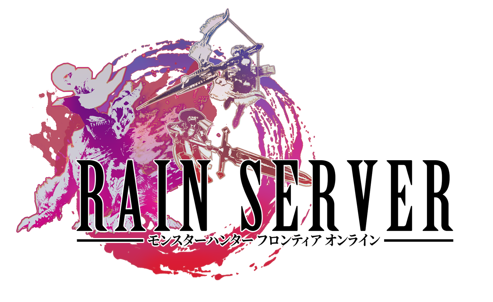

What Is Rain Challenger
Rain Challenger asks you to complete a set of quests with certain restricions within a given time. For each quest you can choose out of five weapon types to clear it with, similar to how arena quests work in mainline MH. Once all challenges have been completed you are eligible for the rewards by submitting all screenshots in the designated Discord channel.
Rules
Make sure to read the rules specific to each quest before attempting them